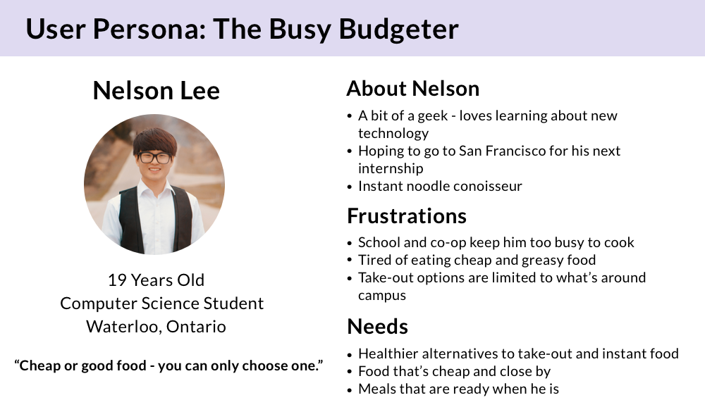

Last Call: Food Waste App

Problem
Food waste is a serious problem in Canada - approximately 40% of food grown yearly in Canada is thrown in the trash. A significant contributor to food waste is the food service industry. Restaurants, bakeries, and other food retailers find themselves throwing out perfectly good food at the end of the workday. After all, few customers are eager to buy old food. Or is that true? My solution to food waste in the food service industry is Last Call, an app that connects restaurants with surplus food at a discount to customers who are glad to eat what would have gone to waste. Restaurants can profit from what would’ve gone to the landfill, customers can enjoy good food at a bargain, and food waste from industry is minimized.
Research
To delve into the problem of food waste, I began with a few articles from the CBC and the Globe and Mail. However, what was most helpful in my understanding of food waste was Characterization and Management of Food Loss and Waste in North America, a report by the Council for Environmental Cooperation that explains the difference between food loss and waste, the various causes of food loss and waste, and opportunities for resolution. The report mentions the idea of a secondary market for the surplus of food found in the hospitality industry. In the non-profit sector in Canada, a well-known example is Second Harvest.
One of the top opportunities for managing food waste from the Council for Environmental Cooperation report
However, my biggest inspiration was Olio, an app that enables restaurants to sell surplus food in the UK. Europe is quite far ahead in this problem space - Karma and ResQ Club are apps quite similar to the solution I came up with. There is no reason that the secondary market cannot be profitable as well. However, I was unable to find any active apps that operated on this concept. Thus, I decided to create Last Call as Canada’s answer to a secondary market for surplus food from restaurants, bakeries, and cafes.
Similar apps that tackle food waste
Process
I conducted exploratory user interviews with two women and two men ranging from 18-26. During these semi-structured interviews, I focused on asking what their current meal habits are (meal prep, takeout, etc.) and what impact environmental concerns have on their behaviours (recycling, meatless diets, etc.). The most insightful feedback from these interviews was that everyone wanted to do better for the environment but habits like recycling were more actionable because they were easily accessible and convenient.
One of our interviewees noted that, “In a perfect world, I would only eat organic and zero waste and bike everywhere but that’s not reality - or mine anyway.” An app that seeks to have an environmental impact cannot bank on this impact alone - time and money are also extremely important constraints. I created personas from these interviews.

A persona that's quite relatable to any student
With these insights, I created a customer journey map for the personas. This captured necessary steps in the user flow, as well as where potential pain points and opportunities to delight users could appear. I used lo-fi paper prototypes to test with the people I had previously interviewed. With this extremely basic design, users gave important feedback about having multiple ways to categorize (searching through categories or keywords) as well as clearly marking the location of businesses in the app.
A customer journey map based on interview insights
Design
As a result of my research and prototyping, the features I chose to focus on were searching/browsing, ordering, and user profile. These are core features that need to be designed effectively in order for the user to continue using the product. Another feature I included was a footprint, which tracks things like meals saved, carbon dioxide, and money saved. I thought it was a way for users to celebrate their environmental impact while encouraging their continued use of the product.
The search, place order, and order confirmation screens
Thank you for reading!